POPULAR BRANDS
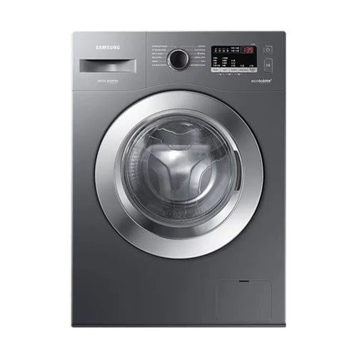
Samsung
Samsung offers modern designs with innovative features like FlexWash and SmartThings integration, allowing users to control their washing machine remotely and optimize performance.
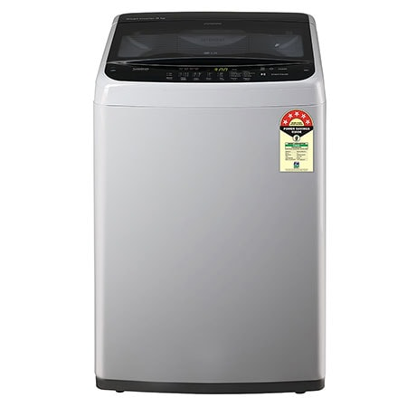
LG
Known for advanced technology, energy efficiency, and quiet operation, LG washing machines feature AI-driven wash cycles, TurboWash, and smart features for a convenient laundry experience.
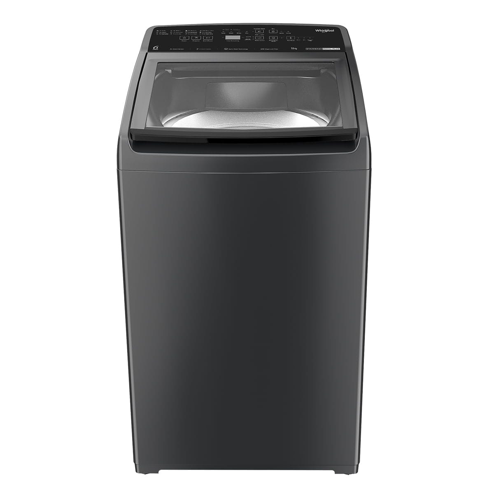
Whirlpool
Trusted for durability and efficiency, Whirlpool provides a wide range of models with features like load-sensing technology, offering optimal cleaning results with each wash.
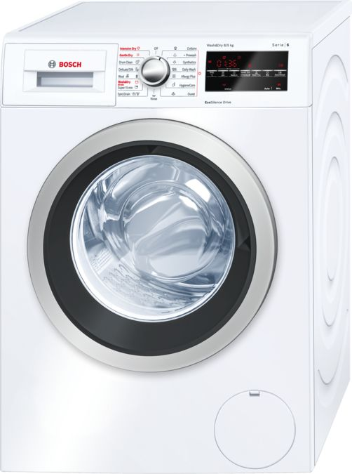
Bosch
Famous for German engineering, Bosch washing machines offer top-quality performance, energy efficiency, and a quiet operation. Their models are also equipped with advanced features for better fabric care.
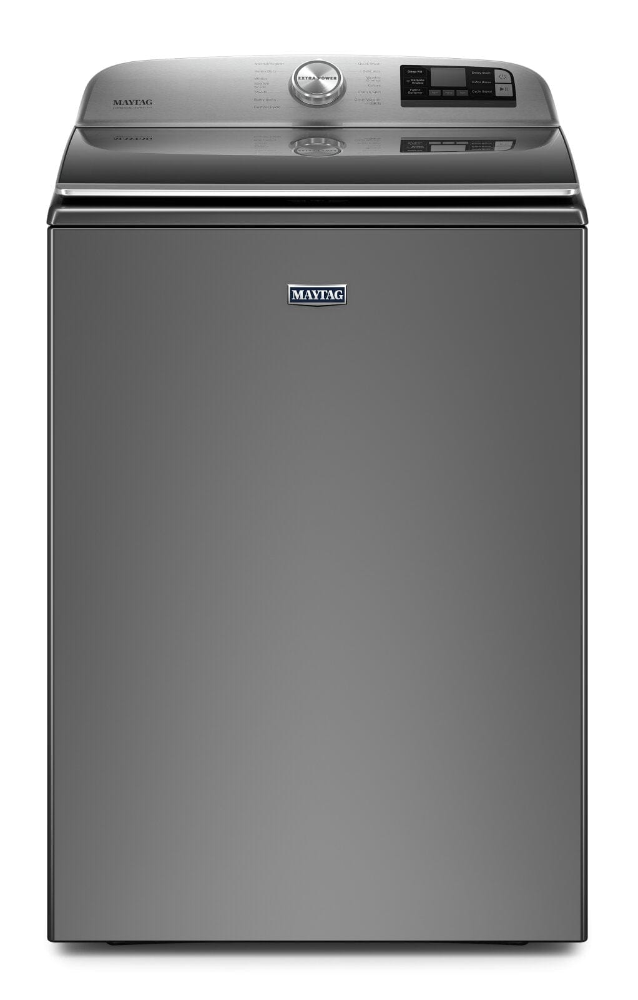
Maytag
Known for powerful, durable machines, Maytag’s washing machines are designed for heavy-duty cleaning and long-lasting reliability, with features like deep water washes and large capacity.
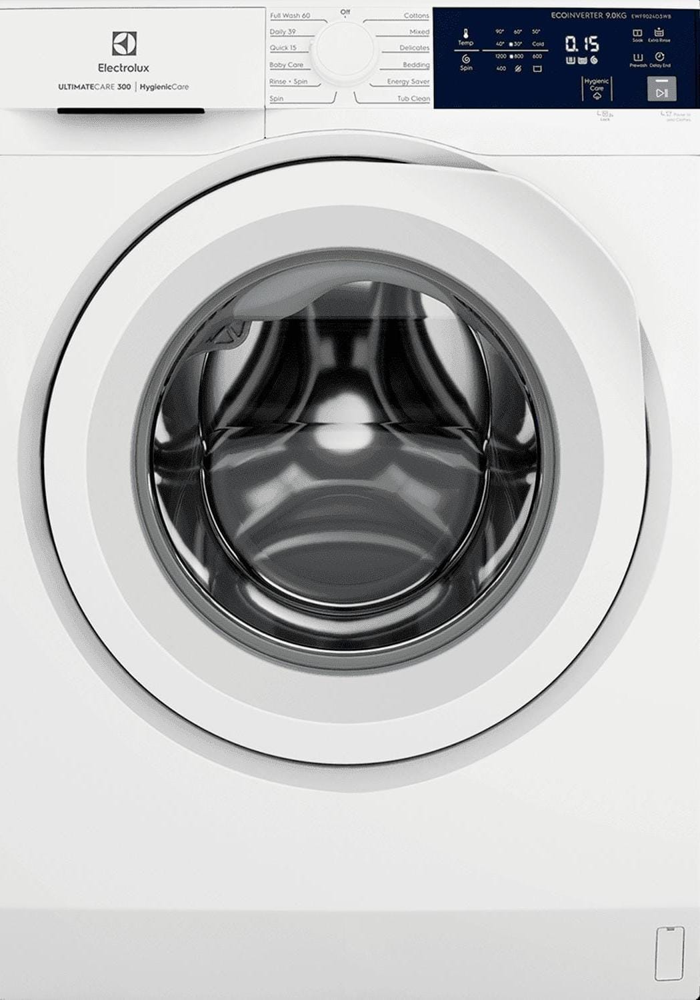
Electrolux
Electrolux is recognized for its high-performance washing machines that combine energy efficiency, advanced features, and sleek designs. They are also known for their high spin speeds, reducing drying time.
TYPES OF WASHING MACHINES
Front Load Washing Machines
Front load washing machines are designed to offer superior cleaning performance while being energy and water efficient. These machines are gentle on clothes and come with features like multiple wash cycles, advanced drum technology, and higher spin speeds for faster drying. Their sleek design and stackable options make them a great choice for modern homes with limited space.
Top-Load Washing Machines
Top-load washing machines have a vertical drum with a lid on the top, allowing users to load and unload clothes easily without bending. These machines typically feature an agitator or impeller for effective cleaning and offer faster wash cycles compared to front-load models. They are often more affordable upfront and require less maintenance, with fewer issues like mold buildup. However, they tend to use more water and energy and can be less gentle on fabrics, especially with an agitator design.
Semi-Automatic Washing Machines
Semi-automatic washing machines are a cost-effective option with two separate tubs for washing and drying. Users manually transfer clothes from the wash tub to the spin-drying tub, offering control over the process. These machines are water-efficient and do not require a continuous water supply, making them ideal for areas with limited water access. However, they require more manual effort compared to fully automatic models and lack advanced features.
Fully Automatic Washing Machines
Fully automatic washing machines handle the entire laundry process with minimal user intervention, offering convenience and efficiency. They come in two types: front-load and top-load, both equipped with features like multiple wash programs and advanced settings. These machines require a continuous water supply and automatically control water levels, detergent usage, and cycle timing. While more expensive than semi-automatic models, they save time and effort, making them ideal for busy households.
Washer Dryer Combos
Washer dryer combos are all-in-one machines that combine washing and drying functions in a single unit, saving space and eliminating the need for a separate dryer. These machines are convenient and ideal for small households or apartments, offering various wash and dry cycles for different fabric types. However, they may take longer to complete a full wash-and-dry cycle compared to standalone machines. Additionally, their drying capacity is often smaller than the washing capacity, requiring smaller loads for efficient drying.
Portable Washing Machines
Portable washing machines are small, lightweight appliances designed for convenience and mobility, making them ideal for apartments, RVs, and dormitories. They usually connect to a standard faucet for water and have a drain hose for easy operation. These machines are energy-efficient, cost-effective, and can handle small laundry loads efficiently. However, they offer limited capacity and may not include advanced features found in full-sized washing machines.
WASHING MACHINES COMPARISON
| Brand | Specifications | Features | Price | Pros | Cons | Why It's the Best |
|---|---|---|---|---|---|---|
| Samsung | Capacity: 8 kg, Energy Efficiency: 5 Star | FlexWash, SmartThings Integration | ₹35,000 | Modern design, Remote control, Efficient performance | Higher initial cost | Advanced features and smart technology for a modern household. |
| LG | Capacity: 7.5 kg, Energy Efficiency: 5 Star | AI-driven Wash Cycles, TurboWash | ₹30,000 | Quiet operation, Energy-efficient, Smart features | Limited drying options | Offers excellent energy savings and advanced AI features. |
| Whirlpool | Capacity: 7 kg, Energy Efficiency: 4 Star | Load-sensing Technology | ₹25,000 | Durable, Affordable, Reliable performance | Basic design, Lacks advanced smart features | Perfect for budget-conscious buyers seeking reliable performance. |
| Bosch | Capacity: 8 kg, Energy Efficiency: 5 Star | Advanced Fabric Care, German Engineering | ₹40,000 | Top-quality performance, Quiet operation | Higher price point | Ideal for those prioritizing performance and fabric care. |
| Maytag | Capacity: 10 kg, Energy Efficiency: 4 Star | Deep Water Wash, Large Capacity | ₹28,000 | Heavy-duty cleaning, High capacity | Consumes more water | Best for families needing heavy-duty cleaning and durability. |
| Electrolux | Capacity: 7 kg, Energy Efficiency: 5 Star | High Spin Speeds, Sleek Design | ₹32,000 | Energy-efficient, Reduces drying time | Smaller capacity | Great for those seeking energy savings and modern aesthetics. |
TOP 3 BEST-RATED WASHING MACHINES
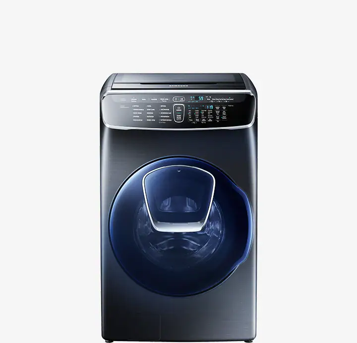
Samsung Flexwash Washing Machine
The Samsung FlexWash Washing Machine is a versatile appliance that combines two separate washing areas in one unit. It features a front-loading drum for larger loads and a smaller top-loading compartment for delicates or smaller items. This allows you to wash different types of clothing simultaneously, saving time and energy. The machine also includes smart features like WiFi connectivity and mobile app control, making laundry management more convenient1. With technologies like EcoBubble, Hygiene Steam, and Vibration Reduction, it ensures thorough cleaning and care for your clothes.
Buy Now
LG AI Direct Drive Washing Machine
The LG AI Direct Drive Washing Machine stands out with its intelligent AI technology, which tailors washing cycles based on the fabric type and load weight, ensuring optimal care for your clothes. The 6 Motion Direct Drive mechanism combines multiple washing motions, such as tumbling, scrubbing, and swinging, to deliver a thorough yet gentle clean, mimicking the actions of hand washing. The machine's Steam Technology not only reduces common allergens but also helps to minimize wrinkles, making your laundry fresher and easier to iron.
Buy Now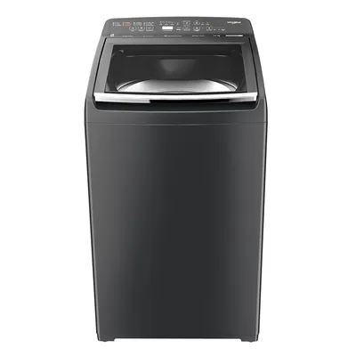
Whirlpool Top Load with 6th Sense Technology
The Whirlpool Top Load Washing Machine with 6th Sense Technology offers advanced features for efficient and effective laundry care. It uses 6th Sense Ultra Clean Technology to analyze laundry loads and automatically adjust water temperature and detergent dosage for optimal cleaning. The machine includes ZPF Technology for faster tub filling even with low water pressure, and a Stainwash Programme that removes tough stains up to 48 hours old. With a 6.5 kg capacity and 740 rpm spin speed, it ensures thorough washing and quick drying.
Buy NowTOP-SELLING WASHING MACHINES
Explore the most in-demand washing machines with expert reviews and ratings!

LG Front Load Washer
A high-efficiency front load washing machine with smart technology, energy-saving features, and an ultra-large capacity for handling big loads effortlessly.
Review: "Quiet, efficient, and easy to use. Clothes come out super clean!"
Buy Now
Samsung Top Load Washer
A powerful top-load washing machine with an innovative design, deep cleaning technology, and smart connectivity for a seamless laundry experience.
Review: "Great performance and value. The quick wash cycle is a game changer!"
Buy Now
Whirlpool High-Efficiency Washer
Designed for powerful stain removal and fabric care, this washer delivers deep cleaning while conserving water and energy, making it a household favorite.
Review: "Reliable and efficient. The energy savings are noticeable!"
Buy NowRELATED ARTICLES
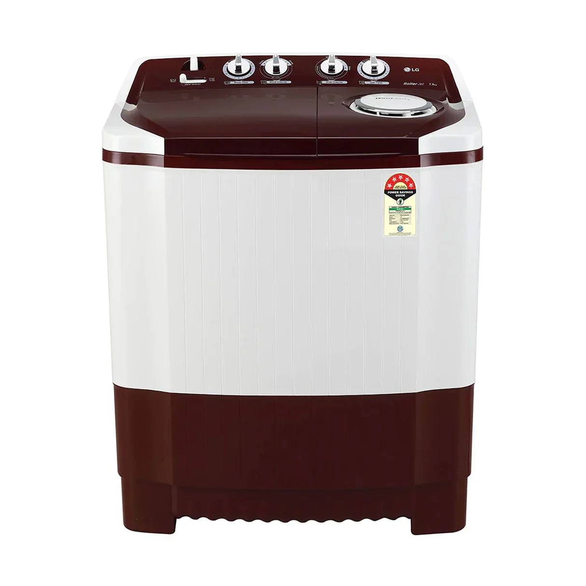
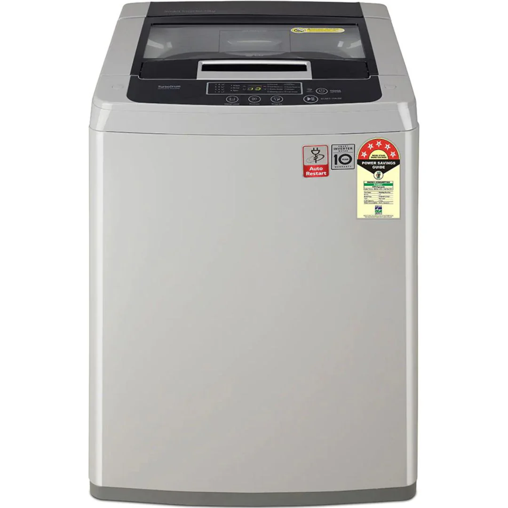
Best top load washing machines: Top 10 efficient picks for smooth and hassle-free laundry days
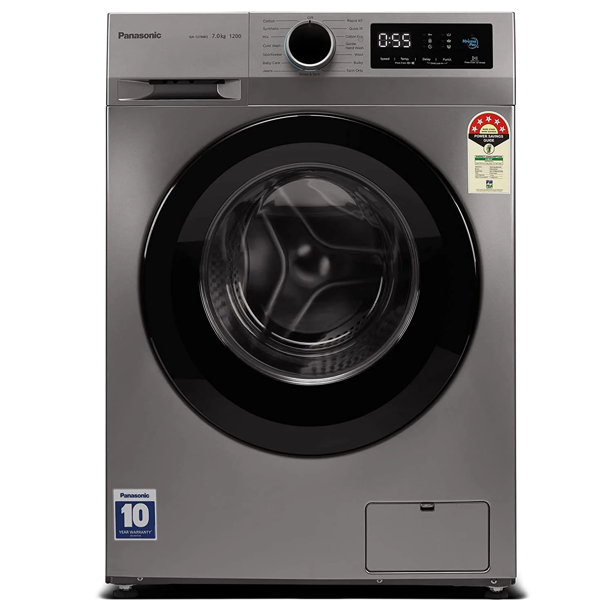
Frequently Asked Questions
How do I properly load my washing machine?
It's best to load your washing machine with a mix of light and heavy items, balancing the load to avoid unbalanced spinning. Always avoid overloading to ensure thorough washing.
Why is my washing machine making a loud noise?
This could be due to an unbalanced load, a worn-out drum bearing, or a foreign object stuck in the drum. Check the load balance and inspect for any debris.
What should I do if my washing machine leaks water?
Check for leaks around the door seal, hoses, or detergent drawer. Inspect the hoses for cracks or loose connections, and replace or tighten them as necessary.
Can I wash all clothes in the washing machine?
Not all fabrics are suitable for machine washing. Delicate fabrics like silk, wool, and lace should be hand-washed or placed in a mesh bag for protection.